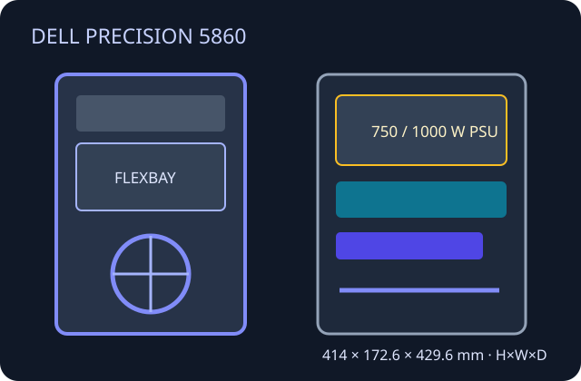

[ XEON W TOWER // PRECISION 5860 ]
Dell Precision 5860 Tower
Single-socket W790 workstation with product-number-dependent PSU, storage and thermal options. Consult Dell's setup and service manuals for the specific chassis revision.

Specifications & fit
| Model / revision | Dell Precision 5860 Tower; distinguish it from earlier 5820 and dual-socket 7875/7960 chassis. |
|---|---|
| Board form factor | Dell proprietary workstation motherboard and mounting; not identified as a standard ATX chassis. |
| Dimensions | 414.0 × 172.6 × 429.6 mm (H × W × D) without rubber foot/lock projection; Dell lists larger envelope with those fittings. |
| PSU | Dell 750 W or 1000 W 80 PLUS Platinum supplies are documented by configuration; use the correct Dell supply and cable set. |
| GPU / cooler / radiator fit | Use Dell's validated GPU/riser and powered-GPU configurations; physical clearance is affected by internal options. CPU cooler and case fans are service-specific assemblies. No universal third-party radiator allowance or retail-card clearance is specified. |
| Drive bays | Internal 3.5-inch/2.5-inch storage and front FlexBay options vary by ordered configuration; SATA/NVMe options are detailed in Setup and Specifications. |
| Airflow | OEM fan shrouds and processor/GPU thermal assemblies manage front-to-rear airflow. Keep the service cover, card guides and all blanking panels installed as required by Dell. |
| Serviceability / compatibility | Dell service manual provides removal/installation order for fans, PSU, GPU and storage assemblies. Match riser, GPU power, drive cage and cooling parts to the service tag; no standard board or PSU swap assumption. |
Manufacturer sources
- Dell — Precision 5860 Tower Setup and SpecificationsDimensions and system specification references.
- Dell — Precision 5860 Tower Service ManualOfficial service and powered-GPU assembly procedures.
- Dell Support — Precision 5860 Tower manualsManufacturer revision-indexed manuals and downloads.